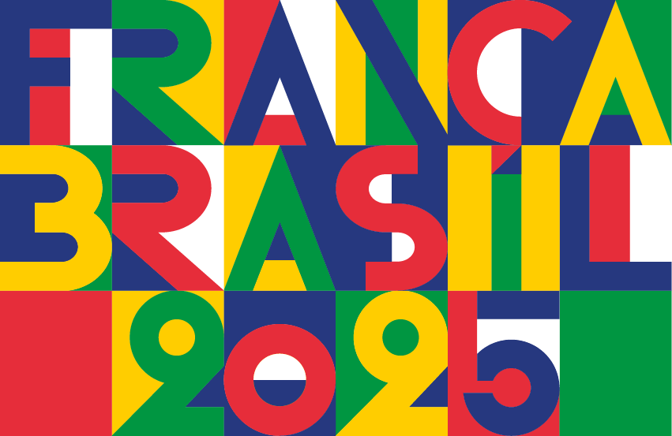
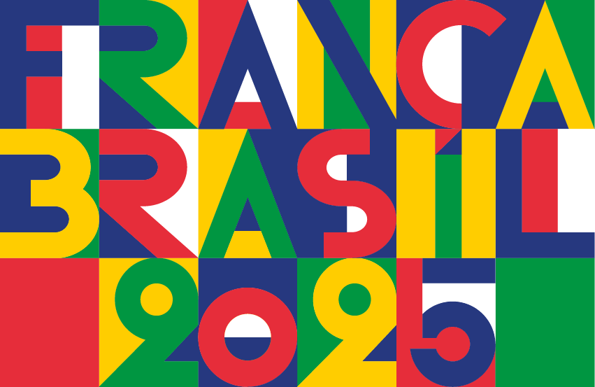
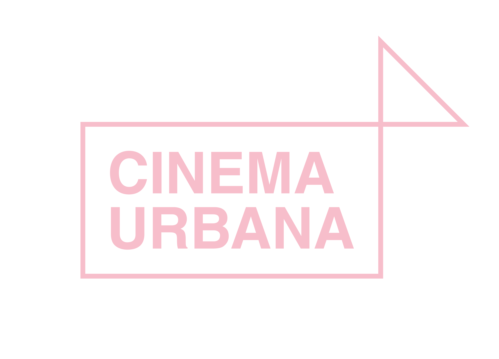

realização

 

apoio
Participantes

Aldo Bearzatto
É urbanista responsável pelo serviço de Urbanismo de Nantes Oeste e diretor artístico do festival Close-Up, além de ser animador do programa La Fabrique Urbaine.
Christian Barani
Desenvolve uma prática que combina documentário e artes visuais. O processo de filmagem envolve o corpo/câmera caminhando pelo espaço, sem roteiro prévio, guiado pelo acaso e pela improvisação. O material captado pode se transformar em filme, instalação, performance, entre outros formatos.

Hervé Bougon
Apaixonado por cinema desde a infância, é cofundador e diretor artístico do Fstvl Close-Up, programador do War on Screen Festival e consultor cinematográfico para o setor privado.

Jean-Yves Leloup
Pioneiro do “cinemix” e dos concertos cinematográficos na França, utiliza técnicas de edição, colagem e remix para criar trilhas sonoras contemporâneas. Autor de cinco livros essenciais sobre música eletrônica, incluindo "Electro: de Kraftwerk a Daft Punk" (2019).